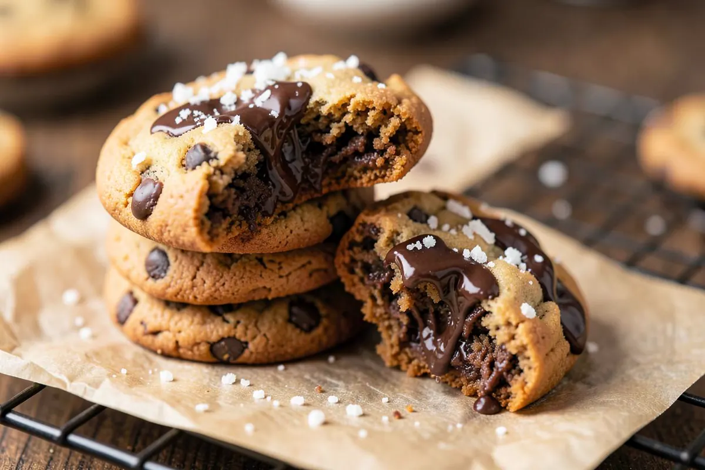

Brown Butter Chocolate Chip Cookies

Illustrative image.
Browning the butter takes about five extra minutes and changes the cookie completely. The water cooks off, the milk solids toast, and what is left tastes like caramel and hazelnut rather than plain fat. It is the single highest-return change you can make to a standard chocolate chip recipe.
Everything else here is deliberately ordinary: brown sugar for chew, a little more salt than feels right, and chocolate chopped from a bar rather than chips, so the cookies have pools of melted chocolate and thin shards in every bite.
Ingredients
- 1 cup unsalted butter
- 1 1/4 cups packed dark brown sugar
- 1/2 cup granulated sugar
- 2 large eggs, at room temperature
- 2 tsp vanilla extract
- 2 3/4 cups all-purpose flour
- 1 1/4 tsp baking soda
- 1 1/2 tsp kosher salt
- 8 oz dark chocolate, chopped into chunks
- Flaky sea salt, for finishing
Instructions
- Melt the butter in a light-coloured saucepan over medium heat. Once it foams, swirl the pan constantly for 4 to 6 minutes until the milk solids turn amber and smell nutty. Scrape every brown speck into a large bowl and let it cool for 10 minutes.
- Whisk in both sugars until smooth, then the eggs one at a time and the vanilla. The mixture should look glossy and slightly thickened.
- Fold in the flour, baking soda and salt with a spatula until just combined, then stir through the chocolate chunks. Stop as soon as the last streaks of flour disappear.
- Scoop into 18 balls of about 3 tablespoons each and chill for at least 30 minutes, or up to 3 days. Cold dough spreads less and gives a chewier centre.
- Heat the oven to 350°F (175°C). Space the dough balls well apart on lined sheets and bake for 11 to 13 minutes, until the edges are set and the centres still look underdone.
- Sprinkle with flaky salt and leave the cookies on the hot sheet for 5 minutes before moving them to a rack, so the centres finish setting.
Why this recipe works
Toasting the milk solids creates new flavour compounds that taste nutty and deeply sweet, and removing the water content means less steam in the oven, so the cookies spread less and stay thicker. Chilling the dough firms the fat, which slows that spread further and gives the flour time to hydrate, producing a chewier centre. Resting the cookies on the hot sheet after baking finishes them gently from below without over-baking the top.
Tips for success
- Use a light-coloured pan to brown the butter so you can see the colour change. In a dark pan it goes from nutty to burnt without warning.
- Scrape every brown speck out of the pan with a spatula. Those specks carry most of the flavour.
- Chop the chocolate unevenly, leaving some fine shards and some large chunks, so it melts into both layers of the cookie.
- Chill the dough for at least 30 minutes, and up to three days if you can. The difference in flavour is real.
- Pull the cookies when the centres still look wet. They set on the hot pan in about five minutes.
Substitutions that work
- Milk chocolate can replace dark, but reduce the salt to one teaspoon since milk chocolate is sweeter and less assertive.
- No dark brown sugar? Use light brown and add a teaspoon of molasses.
- Bread flour in place of a quarter of the all-purpose flour makes them chewier still.
- Chopped nuts, toasted and cooled, can replace up to half the chocolate for a different cookie entirely.
Storage and make-ahead
Keep baked cookies in a sealed container for four days, with a slice of bread if you want them softer. The dough freezes well for three months in scooped balls; bake from frozen at 350°F (175°C) for 14 to 16 minutes. Baked cookies freeze for two months and revive in a warm oven for three minutes.
Serving suggestions
Best eaten warm, with cold milk or coffee. They also make a good base for ice cream sandwiches, pressed together while still slightly warm so they hold their shape once frozen.
Frequently asked questions
How long should the dough chill?
At least 30 minutes to stop the cookies spreading too much, and ideally overnight. Up to three days in the fridge gives a noticeably deeper, more caramel-like flavour.
Can I skip browning the butter?
You can, and the cookies will still work, but they will taste flatter and sweeter. If you skip it, use softened butter rather than melted, or the dough will spread too far.
Why did my cookies spread into flat discs?
Warm dough, a warm pan, or too little flour. Chill the dough thoroughly, cool your baking sheets between batches, and measure flour by weight rather than scooping from the bag.